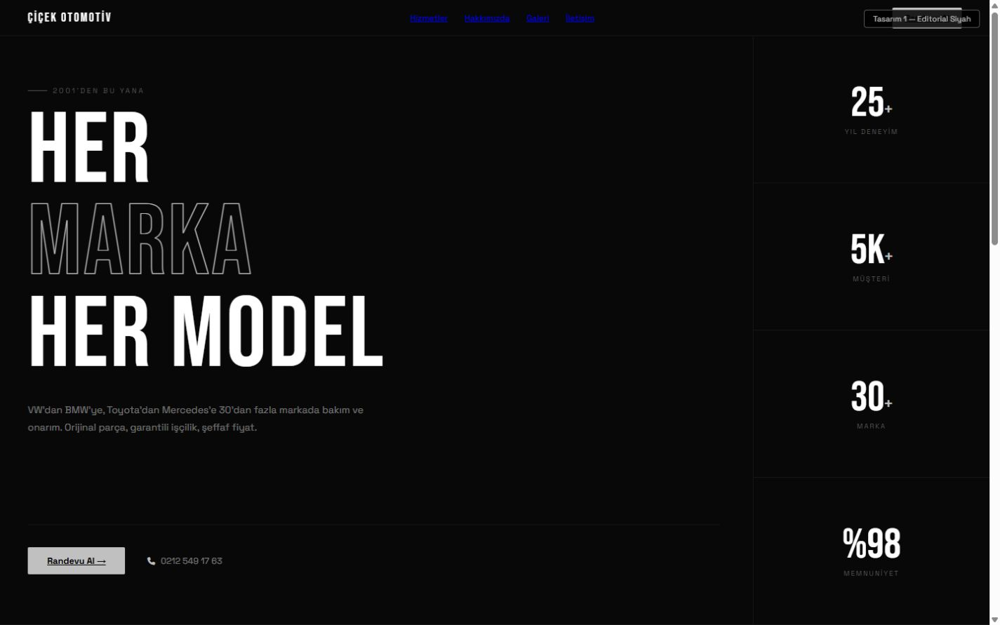
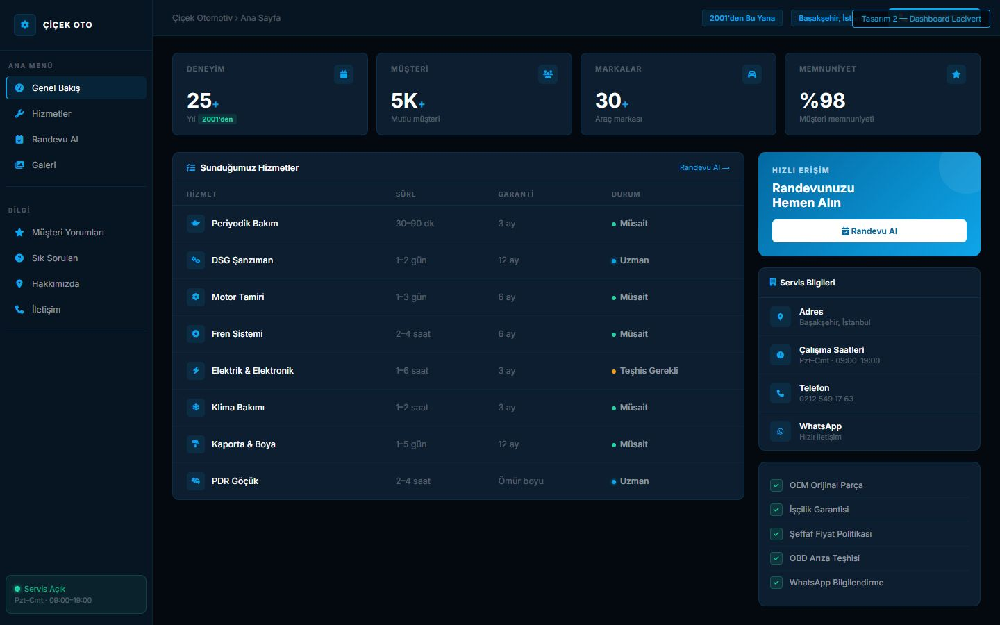
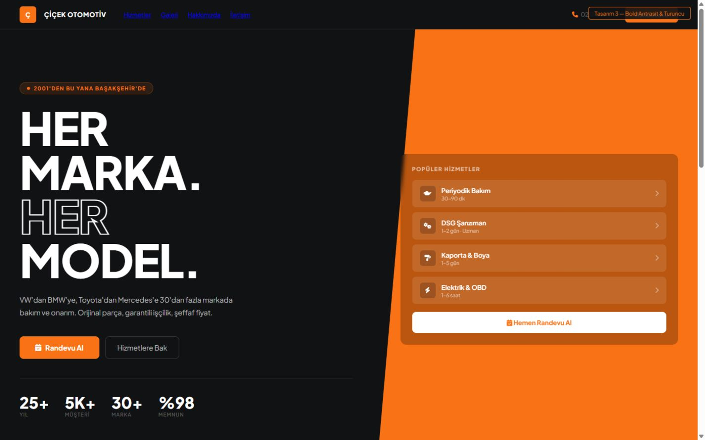
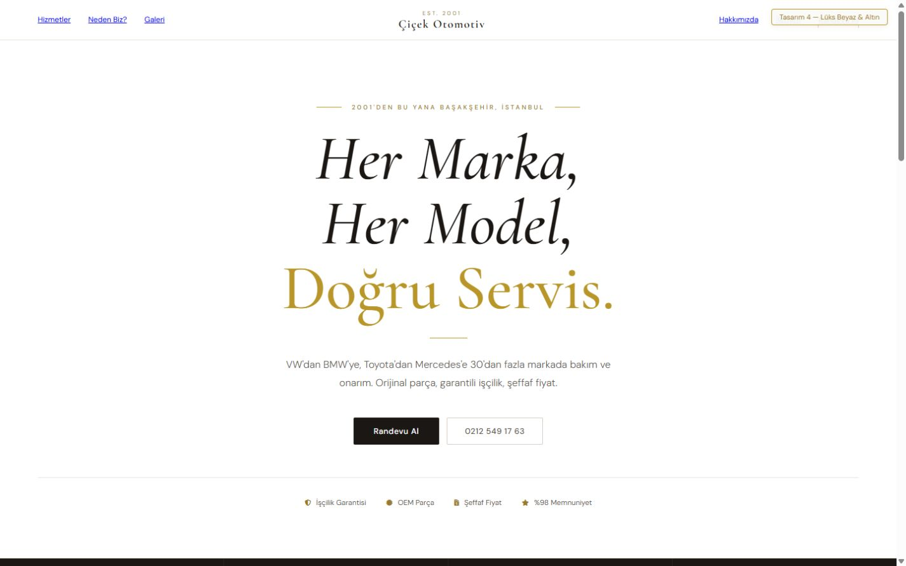
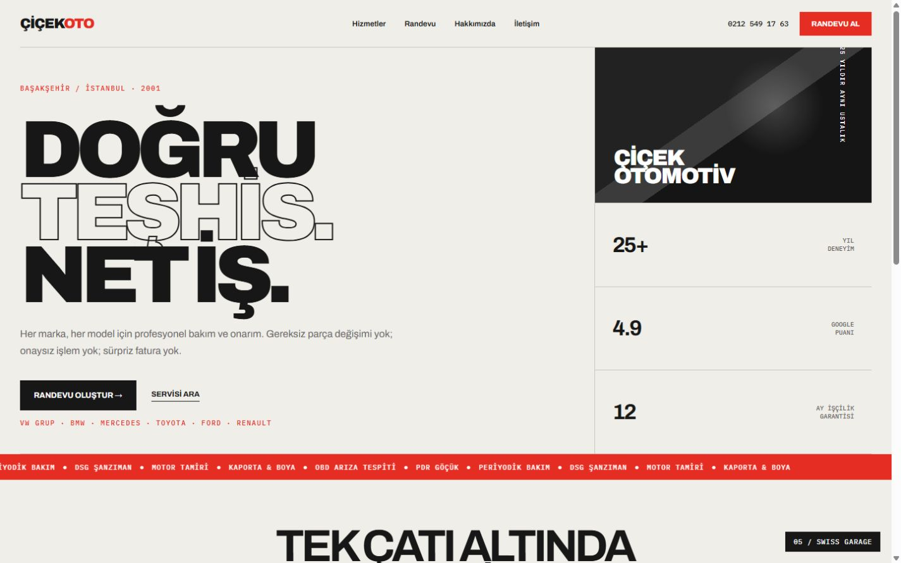
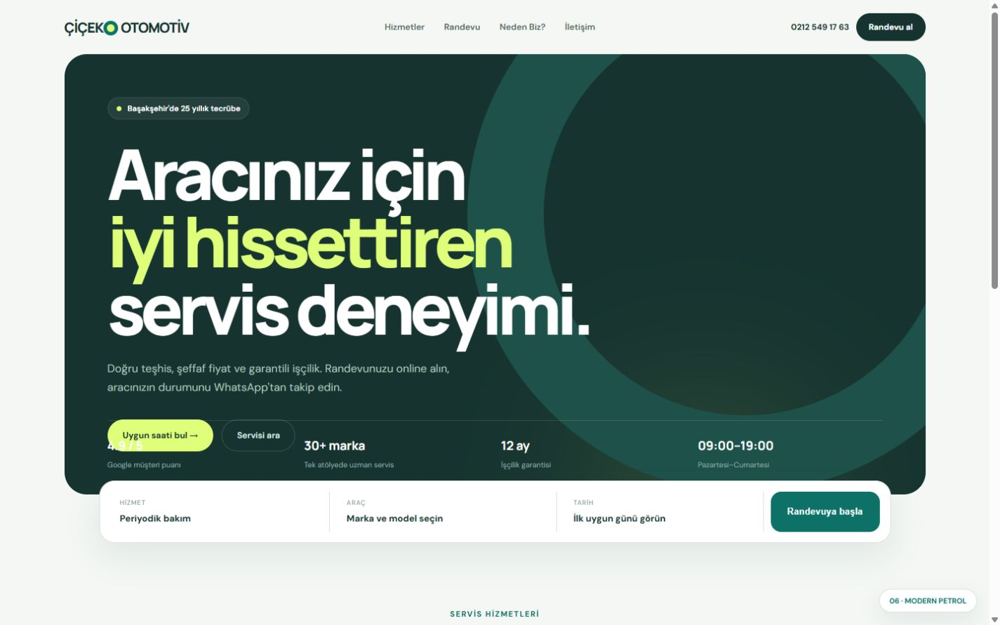
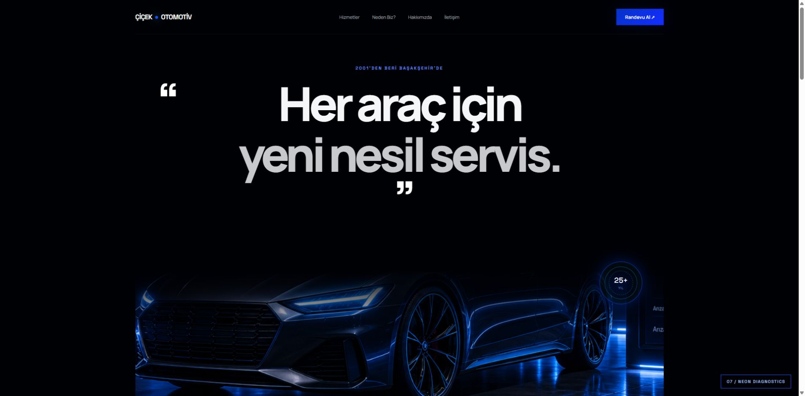

Konsept 01
Editorial Siyah
Keskin, tipografik, performans odaklı. Modifiye ve premium servis hissi.
Aşağıdaki yönlerden birini seçin. Seçilen tasarım; gerçek randevu takvimi, Supabase yönetim paneli, güvenli müşteri kayıtları ve otomatik WhatsApp bildirim akışıyla üretim sürümüne dönüştürülecek.






